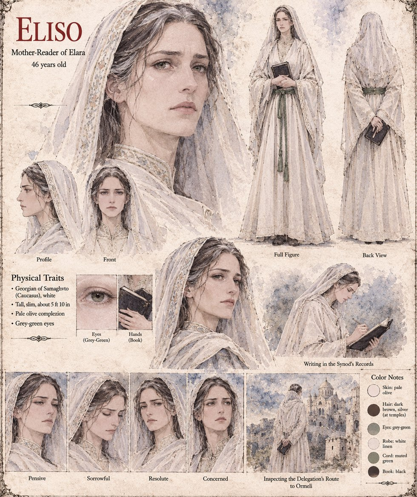

Eliso
Mother-Reader of Elara · leader of the Writ of Inquiry · keeper of the small black book · 46 on her sheet
A Mother-Reader of Elara, a tall, tidy, sorrowful woman, chosen to lead the delegation from Samaghvto because she was the one person in the Synod incapable of being impressed. She comes up to Ormeli on the second of Garren with a Writ of Inquiry sealed by all three temples, which is in itself an event, since the three temples have not agreed on a seal since the last feud. She examines the bow with her hands clasped behind her back, and the twelve arrows whose seeds glow softly in the dim of the upper room, and the thirteenth, whose seed does not; she holds the dead one to the window for a long time and turns it, as a jeweller turns a stone she suspects. Then she kneels, with great gentleness and no visible expectation, to the height of the child under the table, and asks what she had asked for.
“Only a little,” says Nestan. The Mother-Reader writes it down in the small black book she carries for such occasions, word for word, and underlines it, and the underlining would prove the most consequential act of punctuation in the history of Vashkeni. The Writ commands the Warden of Ormeli to appear in Samaghvto at the Vintage, in the month of Iverin, with the bow, the quiver, the dead arrow, and the child. In the years of the Concordat the three priesthoods build on that line the Rite of the Painted Sky: the priest who is to shoot fasts nine days and studies nine months, and at the instant of release the whole college speaks the closing words that the Mother-Reader Eliso’s little black book had supplied, Only a little. The rite reproduces a pure heart, a particular picture and a humble formula, and simply scales the picture, as scholars do, to the dignity of the god. In the generations after the Four Crowns the phrase is spoken over the fourth cup, and the priests, who cannot trace it, assign it to her and the underlined line, and were correct, and were wrong, since what she had underlined was a child’s unit of measure and what was now said was a prayer. In the thirty-second year Nestan, at the fletcher’s stall at the Wine Gate, turns the plain arrow she has just bought in her fingers as the Mother-Reader had once turned a dead one to the light.
The manuscript gives her office, her height, her tidiness and sorrow, the Writ, the arrow and the black book, and no age, face or colouring. The sheet’s age of 46, slim build of about 5 ft 10 in, pale olive complexion, grey-green eyes, dark brown hair silvering at the temples, white linen robe and veil with an embroidered border and muted green cord are its own, as are its panels Pensive, Sorrowful, Resolute and Concerned and its scenes Writing in the Synod’s Records and Inspecting the Delegation’s Route to Ormeli.
“the one person in the Synod incapable of being impressed”